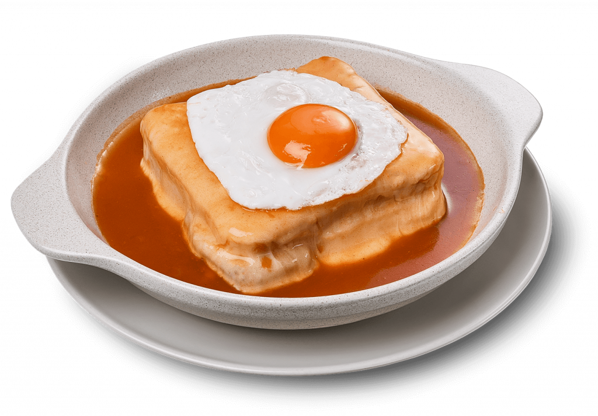

Francesinha

What is Francesinha ?
This is one of the most appreciated dishes and is the signature of Porto. Francesinha is a kind of a delicious sandwich with two slices of bread interspersed by steak, ham and sausage, covered with Edam and a secret and spicy sauce. It’s served with chips and optionally with a fried egg on the top. It’s also known as Little French or Frenchie.
Despite being a typical dish, each restaurant has its own recipe of Francesinha. Many of them argue that the secret is in the sauce, while others says that the secret is in on the quality of the ingredients. Whatever is the secret, the truth is that this is a delicious dish and easy to do at home.
Ingredients
- 2 sausages
- 2 steaks
- 4 slices bread
- 10 slices edam cheese
- 4 slices Ham
- Sauce
Steps
- Cut the sausages lengthwise. Meanwhile season the steaks with salt and pepper.
- Grill the sausages first and then the steaks so they stay medium rare. To grill the sausages use vegetable oil and butter to grill the steaks.
- Start making the Francesinha with this order: slice of bread, slice of cheese, one of ham, the steak, the sausages and finally a bread slice. Finish covering the Francesinha with cheese. Repeat the process to the other one.
- Go to the oven until the cheese is melted.
- Fry the eggs and put them on the top of sandwiches.
Return to the main page